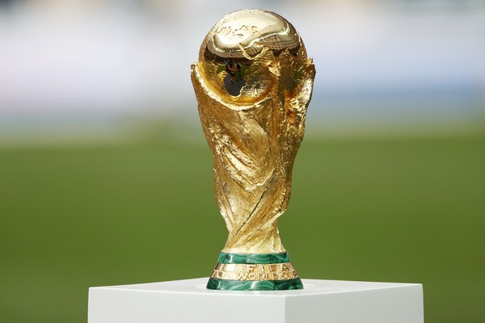
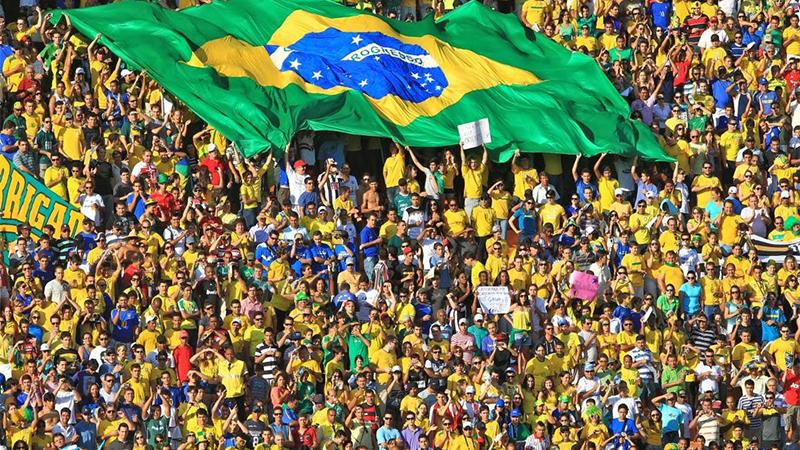
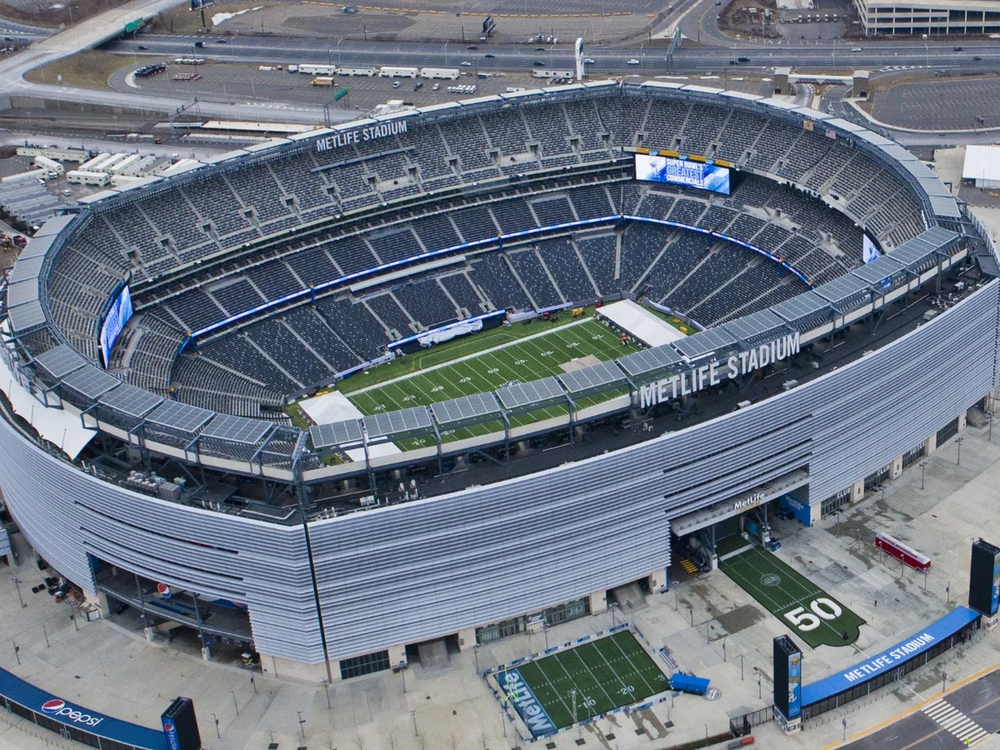

Momentos | Seleções | Estádios | Créditos
Voltar para a página principal

O troféu da FIFA, disputado por 48 seleções pela primeira vez.

A torcida em uma das 16 cidades-sede.

O Brasil terminou em 11º — pior resultado desde 1966.

MetLife Stadium — palco da final de 19 de julho.